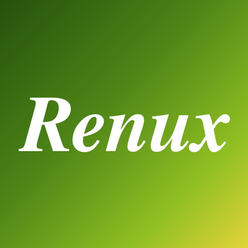
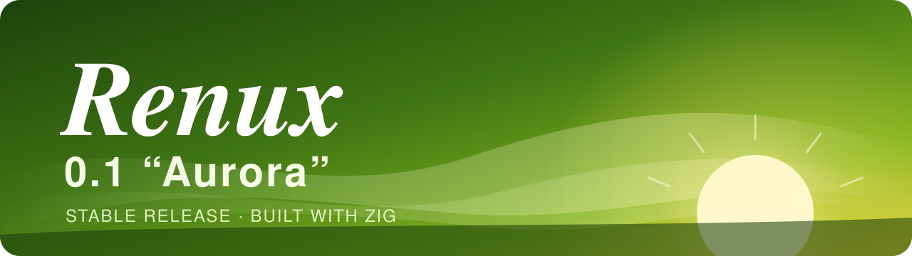

RenuxO Renux é experimental. Ele roda em máquinas amd64 com firmware UEFI.
O Renux em desenvolvimento, compilado pelo GitHub Actions a partir do código mais recente, todo dia às 18:00 no horário de Brasília (21:00 UTC). Uma nightly build não tem versão: cada uma leva o dia e o commit de que saiu. São para testes: as coisas mudam, e podem quebrar, de uma build para a outra.
Snapshots no GitHub Todas as builds
A ISO do instalador inicia no instalador do Renux, que prepara o disco e a rede e instala o sistema. A imagem de disco é um sistema pronto. Confira e descompacte o que baixar:
$ sha256sum -c SHA256 $ unxz renux-nightly-amd64-*-installer.iso.xz

A primeira versão do Renux. O Aurora está em desenvolvimento, e ainda não há nada para baixar. Até ele sair, as nightly builds são a sua prévia.
O Renux é compilado só com o Zig, em qualquer sistema: veja como compilar.